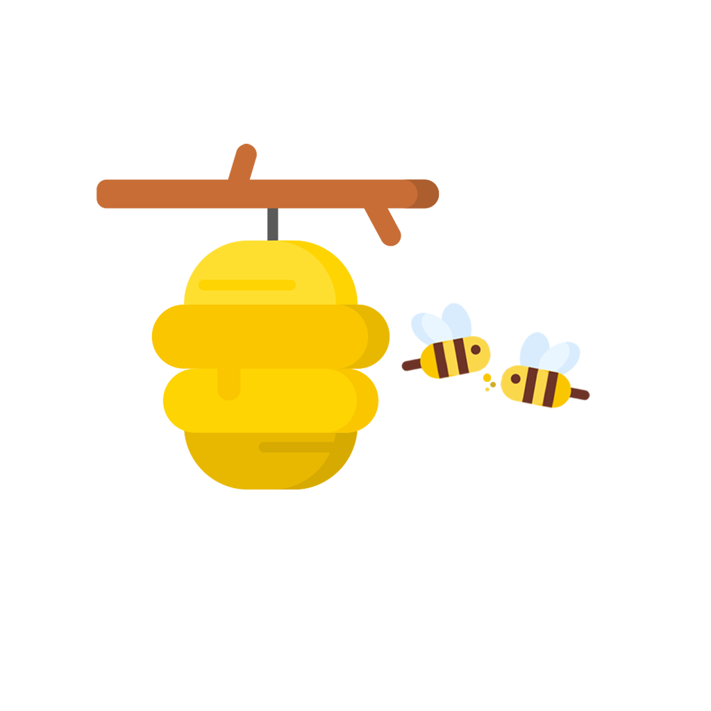

footer
Pollination is a simple, yet incredibly vital process

Once a bee lands on a flower, pollen from the male reproductive organ of the flower clings onto the bee’s hair
When the bee moves to another flower, part of the pollen that was stuck to it falls onto the female reproductive organs of the flower, pollinating it


It is an essential part of plant reproduction, and without bees many crops essential to humans would not be able to survive
Flowers produce nectar, a mixture of water and sugars that encourages bees to visit them

Honeybees are able to use their hollow proboscis (tongue shaped like a straw) to draw nectar into one of their two stomachs, the proventriculus.There, enzymes break down the nectar, killing bacteria turning it into glucose
Bees are able to carry up to about half their body weight, meaning a single bee may carry around 0.05g of nectar back to the hive in one trip. This means that about 50.000 trips are necessary to return 1 kilogram of nectar to the colony
